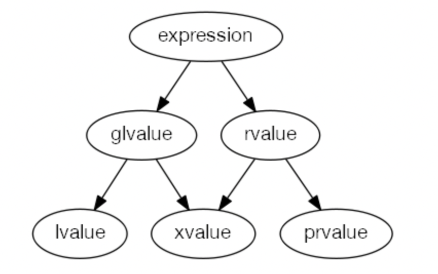

C++模板从入门到劝退(0)——左值与右值
谈到C++模板，多少业界大佬无不讳莫如深，而基于模板的元编程更是历来被业界同仁视为黑魔法。模板从诞生至今已有几十年的历史，实际上在经历了C++11标准的革命性洗礼以及后续的缝缝补补后，模板元编程的门槛和抽象程度已经大大降低。纵观历史长河，优秀的C++书籍鳞次栉比，然而涉及到元编程的书籍却屈指可数，那些传世经典的圣经对于模板皆是浅尝辄止。本系列文章将致力于揭开模板元编程的迷雾，通过牺牲一定程度的表述严谨性，按照笔者的归纳方式穿针引线，为痴迷于黑魔法而又始终不得其解的同学打通任督二脉。
本篇是走进模板世界的第一道前菜，只有搞懂了这些C++中的基本概念，才能掌握模板世界的黑魔法。
左值与右值
随着C++11新标准的制定，C++正式进入现代(modern)时代，相对于传统(traditional/old)C++、新标准的推行可谓是革命性的船新版本。而这一变革带来了两种情况：
- C++神教的新教徒在阅读传统C++代码时会满脸黑人问号：这是个什么方言？
- 尚未解锁现代C++的传统C++程序员在接触新标准时会惊呼：还有这种操作？快住手，这根本不是C++！
在《C++ Primer 5th》问世时，我曾自信满满淘得一本，自诩有着刷了4遍4th的经验，打开了新世界的大门，然后直接自闭。
当大家聊起C++11时，最先想到的可能就是移动语义，没错，这个移动语义可谓是万恶之源，它一方面解决了C++长久以来的顽疾，另一方面也让原本就复杂的语法规则变本加厉。
值语义
传统C++的顽疾在于基于值语义(Value Semantics)的冗余拷贝和赋值。所谓值语义，这是很多OO(Object Oriented)语言中没有的概念，诸如Java,C#等大多数语言，几乎所有的变量都是引用语义(Reference Semantics)（它们天生有着GC(Garbage Collector)来管理所有对象的生命周期，开发者无需操心）。而C++并没有做如此现代化的封装，对外呈现的语言生态相当裸露，值语义是指目标对象由源对象拷贝生成，生成的目标对象与源对象毫无关系彼此独立（一些引用语义的编程语言可能只有基础类型是值语义，但同样的它们为了消除违和感对值语义只字不提，而是强调基础类型的特殊性）。对于不了解值语义的C++初学者来说，会想当然的把C++中的引用看成和其他引用语义编程语言中引用的对等概念，这在传统C++中最多是在使用体验上感觉到有些别扭，而到了C++11后，由于对左值引用、右值引用进行了区分，就使得原本理解上的缺失被进一步放大，自然而然得感觉右值引用莫名其妙。
C++对变量生命周期的一种优雅管理方式是RAII，不过不代表RAII能解决所有场景的变量生命期管理需求，更不代表GC没用。
我们以纯OO语言Java为例，如果写这样一段代码：
1 | |
运行结果如下：
1 | |
可以看到，Java中s1,s2就是引用语义的典范，它们指向的对象是同一个，而在引用语义的编程语言中，这也被称作浅拷贝(Shallow Copy)：在进行赋值、方法传参和返回值时，对于引用类型（非基本类型）一概按引用传递（传址）。
是不是觉着很简单很直观，如果再定义一个
String s3 = "hello";，思考下s3和s1是不是同一个对象呢？如果换成String s3 = new String("hello"); String s4 = new String("hello");，s3和s4和s1又是什么关系呢？当然，这是Java体系下的另一个话题了。
再看Python 3:
1 | |
运行结果如下：
1 | |
显然赋值操作是按引用进行传递，s1,s2所指是同一个对象。
我常说python是一门乱七八糟的语言，所谓“动态类型一时爽，代码重构火葬场”。如果定义
s3 = "hello"，s3和s1是什么关系呢？如果把”hello”换成”hello world”呢？当然，这也是Python体系下的另一个话题了。对于Java和Python这类工程/工具语言，没必要过于学究，实际上许多经验丰富的Java/Python程序员对这两个问题也是懵逼的，但这丝毫不影响写出健壮可用的代码，这些问题可能也就面试会被问到。。。但是对于C++来说，凡事都得学究一点，哪怕是经验丰富的C++程序员也常常犯语法错误。
那么在C++中，对于标准库的string来说，我们进行类似的赋值是什么结果呢？
1 | |
运行结果：
1 | |
可以看到s1,s2的地址并不相同，对于非基础类型，C++中使用相同类型的对象做初始化赋值的语义是去调用该类型的拷贝构造器(copy ctor)（C++中初始化赋值和普通的赋值语义并不等同，后者在这种情况下调用的是拷贝赋值操作符(copy assignment))。此外，对于第一行string s1 = "hello";也并没有表面看上去那样简单，std::string并不是基础类型，赋值初始化在C++的语义是调用相应的拷贝构造器，但是由于"hello"这个字符串字面量的类型是const char[6]（有界常量字符数组，而且标准规定字符串字面量是左值），并不能匹配拷贝构造器的参数，因此按照常理来说编译应该报错才对。但另一方面，C++在某些特定场合支持适宜的隐式(implicit)转换，上述代码会先用"hello"隐式的生成一个临时的string对象（这需要std::string有一个接受const char[6]或其退化(decay)类型的构造器），然后再调用拷贝构造器将临时对象复制给s1。
我们尝试来探讨一下：
1 | |
运行结果：
1 | |
显然，运行结果并不符合预期，理论上除了String s2=s1;这一行会调用copy ctor以外，String s1 = "hello";也应该调用一次才对，为什么只看到了一次custom ctor呢？这是因为C++11标准定义了复制省略(Copy Elision)技术（诸如String s1 = "hello";的写法其实非常的符合直觉，但是因为值语义的关系，C++却不得不多做一次值拷贝），要求编译器在实现时对这一情景做一次合理的拷贝消除。实际上，在C++11标准化之前各大厂商的编译器就已经为这事买单了（委员会的“懒汉们”永远是亡羊补牢），传统C++的开发者应该也了解诸如RVO(Return Value Optimization), NRVO(Named Return Value Optimization)等技术，而这本质上做的就是特定场合的复制省略（未标准化之前，可以视作语言天然缺陷的遮羞布）。
如果我们通过编译选项关闭复制省略(-fno-elide-constructors)，重新运行：
1 | |
表达式值分类
C++中基于值语义的拷贝构造和拷贝赋值，可能会导致大对象的冗余拷贝从而引发性能瓶颈。虽然开发者可以通过指针和引用来规避掉部分场景的copy（编译器也十分配合的蒙上遮羞布），但还是有诸多场景无可避免。我曾看过这么一个形象的比喻：要把大象从A冰箱转移到B冰箱需要几步呢？普通青年的做法是3步：打开冰箱A和B的门；把大象从A转移(move)到B；关闭冰箱A和B。2B青年的做法则是：打开冰箱A和B的门；启用量子复制系统在冰箱B克隆出大象；启用射频消融技术将A中大象解体气化。没错，C++曾经就是这个2B青年。
移动(move)这件事本身很好理解，因为这是一个符合直觉的做法，但是对背着重重历史包袱的C++来说，想要从语言层面理解移动，就需要前置理解这样一个概念：左值(lvalue)和右值(rvalue)。实际上，左值和右值并不是C++11所引入的术语，这两个概念的历史由来可以追溯到编程语言CPL，那么彼时何为左值和右值呢？顾名思义，在赋值操作符(‘=’)左边的就是左值，右边的就是右值，而这也是左值和右值得以命名的历史原因。C语言继承了CPL的分类法，但是弱化了赋值的作用，C语言中左值一开始表示可以被赋值的对象，但由于const的引入，这类对象被修正称作“可更改的左值”，而右值则被视为“值”的同义词，分类上通通都叫作其他(others)（函数和非对象值）。由于const，我们不能再通过表达式值可否修改来判断是否是左值，而是通过是否可寻址（于是坊间流传的一个不严谨的说法就是：左值对应变量的存储位置，右值对应变量的值本身）。
一种说法是ISO C中的lvalue其实是locator value的缩写，算是个美丽的巧合。
传统C++(C++98)对表达式的值分类继承了C的做法，但复辟了右值的称呼，此外，C++98规定函数为左值（因为可以被取地址，在后续的标准演进中函数甚至当家做主成了一等公民，实际上除了函数还有一些其他类似情况的表达式也被视为左值），而C++中的引用可以被绑定在左值之上，但不能绑定到右值（只有const引用可以绑定到右值）。截止C++03，我们把具有标识(identity)的表达式视为左值，没有标识的表达式视为右值。因此，名称、指针、引用都是左值，是命名对象，它们有可以寻址的确定内存地址；字面量、临时对象等视为右值，右值仅在创建它的表达式中可以被访问。函数名称是左值，数组名称是常量左值（只不过大多数表达式中函数名和数组名被自动隐式转换成右值）。右值的生命周期短暂，所以需要左值去捕获它，把右值拷贝(copy)给左值是常规操作。
然而在C++11之后，为了支撑移动语义引入了右值引用，因此左值和右值的定义发生了很大变化。右值引用可以绑定到右值上来给临时对象续命，而移动语义则把临时对象移动(move)而不是拷贝(copy)到左值对象上。对于左值和右值的分类，标准不得不做一些扩充和修正：
- 左值(lvalue): 指定一个对象(object)或函数(function)。
- 如果
E是某种类型的指针类型，那么*E就是一个左值表达式，它引用的是E所指向的对象(object)或函数(function)。 - 调用一个返回类型为左值引用的函数，其结果是一个左值。
- 如果
- 将亡值(xvalue): expiring value的缩写，也指定一个对象，这个对象通常是生命周期即将结束的状态，因此它可以被移动。xvalue是某些涉及右值引用的表达式的结果。
- 调用一个返回类型为右值引用的函数，其结果就是一个xvalue。
- 泛左值(glvalue): lvalue或者是xvalue。
- 右值(rvalue): xvalue，临时的对象或子对象，或者是与对象无关的值。
- 纯右值(prvalue): 非xvalue的rvalue。
- 调用一个返回类型为非引用类型的函数，其结果就是一个prvalue。

大部分初学者都会因为不了解xvalue和prvalue的概念而想当然地把lvalue和rvalue想象成同一层级的概念，而这在学习过程中就会遇到重重困扰，进而对rvalue的概念云里雾里。实际上rvalue是个混合分类。
自此，表达式的值分类不仅考虑了标识(identify)，还考虑了可移动性(movability)。我们按照标准做一下归纳：
- 左值(lvalue): 具有标识，不可移动。
- 将亡值(xvalue): 具有标识，可以移动。
- 纯右值(prvalue): 没有标识，可以移动。
- 泛左值(glvalue): 具有标识
- 右值(rvalue): 可以移动
这样一分类，是不是有种恍然大悟的感觉~
那么再看看三种基本值类型都对应哪些表达式呢？这里参考reference手册并裁剪掉一些corner case：
- 左值(lvalue):
- 变量名、函数名、数据成员
- 即使变量类型是右值引用，变量本身依然是左值(这不是特例，是正统的语法规则)
std::getlinestd::cin,std::endl
- 返回类型为左值引用的函数调用或操作符重载或类型转换
std::getline(std::cin, str)std::cout << 1,str1 = str2,++itstatic_cast<int&>(val)
- 返回类型为函数右值引用的函数调用或操作符重载或类型转换
static_cast<void (&&)(int)>(x)
- 内建(built-in)的赋值与复合赋值表达式
a=ba+=b,a*=b
- 内建(built-in)的前缀自增、自减
a++a--
- 内建(built-in)的解引用表达式
*p
- 内建(built-in)的下标操作符表达式
a[n],p[n]
- 对象成员访问，内建(built-int)的指针成员访问
a.m(m不能是枚举成员，也不能是非静态成员函数）t.m(t为右值且m为非静态数据成员)p->m(m不能是成员枚举值，也不能是非静态成员函数)
- 对象的成员指针访问，内建(built-in)的指针的成员指针访问（成员指针的指针本质上是偏移，和普通的指针不太一样，导致这两个东西非常的拗口和别扭）
a.*mp(a是左值，mp是数据成员指针)p->*mp(mp是数据成员指针)
- 右端为左值的逗号表达式
a, b(b是左值)
- 二、三操作数为特定值的三元运算符
- 字符串字面量(String Literal)
"hello"
- 变量名、函数名、数据成员
- 纯右值(prvalue):
- 字面量
42'a'truenullptr
- 返回类型为非引用的函数调用或操作符重载或类型转换
str.substr(1, 2)str1 + str2it++static_cast<double>(x),std::string{},(int)42
- 内建(built-in)的后缀自增、自减表达式
a++b--
- 内建(built-in)的算数、逻辑、比较、取地址表达式
a + b,a % b,a & b,a << ba && b,a || b,!aa < b,a == b,a >= b&a
- 对象成员访问，内建(built-in)的指针成员访问
a.m(m是成员枚举值或非静态成员函数)p->m(m是成员枚举值或非静态成员函数)
- 对象的成员指针访问，内建(built-in)的指针的成员指针访问
a.*mp(mp是成员函数指针)p->*mp(mp是成员函数指针)
- 右端为右值的逗号表达式
- 二、三操作数为特定值的三元表达式
this指针- 枚举值
- lambda表达式
[](int x){ return x * x; }
- 字面量
- 将亡值(xvalue):
- 返回类型为右值引用的函数调用或操作符重载或类型转换
std::move(x)static_cast<char&&>(x)
- 对象成员访问
t.m(t是右值且m是非静态非引用数据成员)
- 对象的成员指针访问
t.*mp(t是右值且mp是数据成员指针)
- 二、三操作数为特定值的三元表达式
- 返回类型为右值引用的函数调用或操作符重载或类型转换
三元表达式目前的分类比较复杂，详见https://en.cppreference.com/w/cpp/language/operator_other#Conditional_operator
这里的分类因C++历史的演进而变得非常复杂，初学者没必要全盘记住，实际上日后了解了更多的细节后，会发现这里的分类其实是非常直观的。至此，如果你能看到这里，那么恭喜你，基础的内容你已经掌握了，下一讲，我们谈谈右值引用和移动语义。